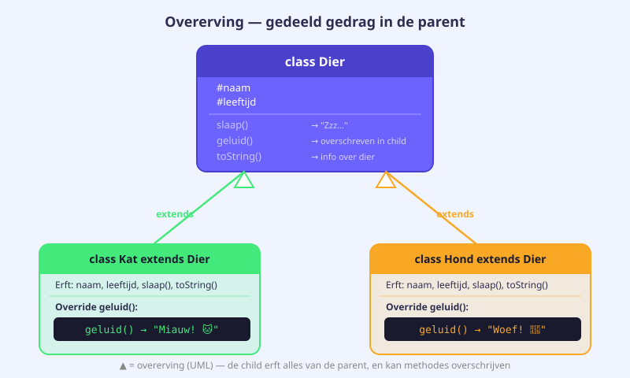
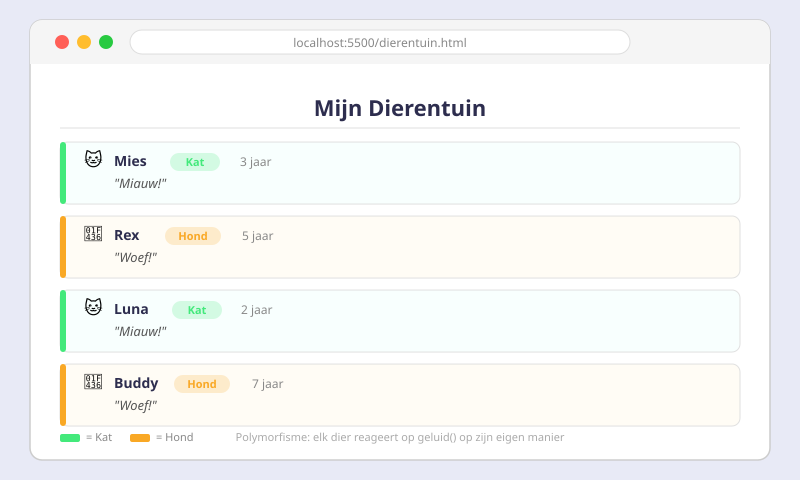

Overerving & Polymorfisme
- Uitleggen waarom overerving code-herhaling vermijdt
- Een child class aanmaken met
extends - De parent-constructor aanroepen via
super(param) - Een methode van de parent overschrijven (override) in de child class
super.methode()gebruiken om de parent-versie te bewaren en uit te breiden- Polymorfisme toepassen: objecten van verschillende klassen via dezelfde interface aanspreken
instanceofgebruiken om het type van een object te controleren
18.1 Het probleem van herhaling
Stel: je programmeert een dierentuin-app. Je hebt een klasse Kat en een klasse Hond. Beide dieren hebben een naam, een leeftijd en een methode slaap().
class Kat {
#naam;
#leeftijd;
constructor(naam, leeftijd) {
this.#naam = naam;
this.#leeftijd = leeftijd;
}
get naam() { return this.#naam; }
get leeftijd() { return this.#leeftijd; }
slaap() {
console.log(`${this.#naam} slaapt... Zzz.`);
}
geluid() { console.log("Miauw!"); }
}
class Hond {
#naam;
#leeftijd;
// ... identieke code als Kat!
slaap() {
console.log(`${this.#naam} slaapt... Zzz.`);
}
geluid() { console.log("Woef!"); }
}De constructor, de private fields #naam en #leeftijd, de getters en de methode slaap() zijn identiek in beide klassen. Dat is copy-paste programmeren — en dus slecht: als je iets wil wijzigen, moet je dat in elke klasse apart doen.
De oplossing: overerving.
18.2 extends — de basisovererving
Met het extends-keyword maak je een child class (ook wel subklasse of afgeleide klasse) die alle publieke en protected leden van de parent class (superklasse) erft.
class Dier {
#naam;
#leeftijd;
constructor(naam, leeftijd) {
this.#naam = naam;
this.#leeftijd = leeftijd;
}
get naam() { return this.#naam; }
get leeftijd() { return this.#leeftijd; }
slaap() {
console.log(`${this.#naam} slaapt... Zzz.`);
}
}
// Kat erft alles van Dier
class Kat extends Dier {
geluid() {
console.log("Miauw!");
}
}
// Hond erft alles van Dier
class Hond extends Dier {
geluid() {
console.log("Woef!");
}
}
let kat = new Kat("Mochi", 3);
let hond = new Hond("Rex", 5);
console.log(kat.naam); // "Mochi" — geërfd van Dier
kat.slaap(); // Mochi slaapt... Zzz. — geërfd van Dier
kat.geluid(); // Miauw! — eigen methode van Kat
hond.geluid(); // Woef! — eigen methode van Hondinstanceof — type controleren
Met instanceof controleer je of een object een instantie is van een bepaalde klasse — of van een parent-klasse:
console.log(kat instanceof Kat); // true
console.log(kat instanceof Dier); // true — Kat erft van Dier
console.log(kat instanceof Hond); // false
18.3 super — de parent-constructor aanroepen
Wanneer een child class een eigen constructor heeft, moet je als eerste instructie super(...) aanroepen. Dat roept de constructor van de parent-class aan en initialiseert de geërfde private fields.
class Kat extends Dier {
#kleur; // eigen private field van Kat
constructor(naam, leeftijd, kleur) {
super(naam, leeftijd); // VERPLICHT als eerste — roept Dier-constructor aan
this.#kleur = kleur; // daarna pas eigen fields initialiseren
}
get kleur() { return this.#kleur; }
geluid() {
console.log(`${this.naam} (${this.#kleur}) zegt: Miauw!`);
}
}
let mochi = new Kat("Mochi", 3, "grijs");
console.log(mochi.naam); // "Mochi"
console.log(mochi.leeftijd); // 3
console.log(mochi.kleur); // "grijs"
mochi.geluid(); // Mochi (grijs) zegt: Miauw!Als je super() vergeet, of het niet als eerste instructie plaatst, gooit JavaScript een ReferenceError. Dit is een strenge regel zonder uitzonderingen.
Uit de praktijk: AutomaticCar extends Car
class AutomaticCar extends Car {
#gearMode; // eigen veld: P, R, N of D
constructor(brand, color, maxSpeed) {
super(brand, color, maxSpeed); // verplicht: roept Car-constructor aan
this.#gearMode = "P"; // standaard: Park
}
get gearMode() {
return this.#gearMode;
}
set gearMode(newValue) {
if (newValue !== "P" && newValue !== "N" && newValue !== "R" && newValue !== "D")
throw "Je moet kiezen voor P, N, R of D.";
this.#gearMode = newValue;
console.log(`Gear mode set to ${this.#gearMode}.`);
}
}18.4 Methode-overschrijving (override)
Een child class kan een methode van de parent opnieuw definiëren. De child-versie vervangt de parent-versie voor instanties van die child class.
class Dier {
#naam;
constructor(naam) { this.#naam = naam; }
get naam() { return this.#naam; }
slaap() {
console.log(`${this.#naam} slaapt.`);
}
}
class Hond extends Dier {
// Override: eigen versie van slaap()
slaap() {
console.log(`${this.naam} snurkt luid terwijl hij slaapt!`);
}
}
let dier = new Dier("Generiek dier");
let rex = new Hond("Rex");
dier.slaap(); // Generiek dier slaapt.
rex.slaap(); // Rex snurkt luid terwijl hij slaapt!super.methode() — parent-versie uitbreiden
Soms wil je de parent-versie uitbreiden in plaats van volledig vervangen. Gebruik dan super.methode():
class AutomaticCar extends Car {
move() {
// Eerst eigen logica uitvoeren
console.log(`Calculating recommended gear for automatic ${this.brand}...`);
if (this.gear < 5) {
this.gearUp(); // methode geërfd van Car
}
// Dan de parent-versie aanroepen
super.move();
}
}18.5 Polymorfisme
Polymorfisme (van het Grieks: "veelvormigheid") betekent dat objecten van verschillende klassen via dezelfde methode-naam aangesproken kunnen worden, maar elk hun eigen versie uitvoeren.
class Dier {
#naam;
constructor(naam) { this.#naam = naam; }
get naam() { return this.#naam; }
geluid() { console.log(`${this.#naam} maakt een geluid.`); }
}
class Kat extends Dier {
geluid() { console.log(`${this.naam} zegt: Miauw!`); }
}
class Hond extends Dier {
geluid() { console.log(`${this.naam} zegt: Woef!`); }
}
class Vogel extends Dier {
geluid() { console.log(`${this.naam} zegt: Tjilp!`); }
}
// Array met gemengde dieren
let dieren = [
new Kat("Mochi"),
new Hond("Rex"),
new Vogel("Tweety"),
new Kat("Luna")
];
// forEach roept .geluid() aan op elk — elk object doet zijn eigen versie
dieren.forEach(dier => dier.geluid());
// Output:
// Mochi zegt: Miauw!
// Rex zegt: Woef!
// Tweety zegt: Tjilp!
// Luna zegt: Miauw!Dit is de kracht van polymorfisme: de forEach-lus hoeft niet te weten of het een Kat, Hond of Vogel is — hij roept gewoon geluid() aan en elk object doet het juiste.
Oefeningen
Maak de volgende klassenstructuur:
Base class Dier:
- Private fields:
#naam,#leeftijd - Constructor:
constructor(naam, leeftijd) - Getters:
get naam(),get leeftijd() - Methode
slaap(): logt"[naam] slaapt... Zzz." - Methode
geluid(): logt"[naam] maakt een onbekend geluid." - Methode
toonInfo(): logt"[naam] is [leeftijd] jaar oud."
Child class Kat extends Dier: Override geluid(): logt "[naam] zegt: Miauw!"
Child class Hond extends Dier:
- Extra private field
#ras - Constructor:
constructor(naam, leeftijd, ras)— roeptsuper(naam, leeftijd)aan - Getter
get ras() - Override
geluid(): logt"[naam] (ras: [ras]) zegt: Woef!"
let dieren = [
new Kat("Mochi", 3),
new Hond("Rex", 5, "Labrador"),
new Kat("Luna", 1),
new Hond("Bella", 4, "Beagle")
];
dieren.forEach(dier => {
dier.toonInfo();
dier.geluid();
dier.slaap();
console.log("---");
});Breid oefening 1 uit met DOM-manipulatie. Toon de dieren in een HTML-pagina:
- Maak een HTML-bestand met een lege
<ul id="dierenlijst"></ul> - Maak in JavaScript dezelfde array van dieren aan
- Gebruik
forEachendocument.createElementom voor elk dier een<li>aan te maken - De tekst in elk
<li>is:"[naam] — [type] — [leeftijd] jaar oud" - Gebruik
instanceofom het type (Kat/Hond) te bepalen voor de weergave

Maak een klassenstructuur voor voertuigen:
- Base class
Voertuigmet#merk,#aantalWielenen methoderijd() - Child class
Auto extends Voertuigmet extra field#aantalDeuren - Child class
Motor extends Voertuigmet extra field#heeftZijspan - Elke child-klasse overschrijft
rijd()om een specifieke boodschap te loggen
Maak een array van gemengde voertuigen en doorloop ze met forEach. Gebruik instanceof om het type te herkennen.
Huistaak
Opdracht: Schoolapp met overerving
Maak een klassenstructuur voor een schoolapplicatie:
Deel 1 — Klassen (4 punten)
- Base class
Persoonmet#naamen#email, inclusief getters en methodetoonProfiel() - Child class
Leerling extends Persoonmet extra veld#klasen override vantoonProfiel() - Child class
Leerkracht extends Persoonmet extra veld#vaken override vantoonProfiel()
Deel 2 — Gebruik (3 punten)
- Maak minstens 2 leerlingen en 1 leerkracht aan
- Zet ze samen in één array
- Doorloop de array met
forEachen roeptoonProfiel()aan op elk object
Deel 3 — DOM (3 punten)
- Toon de profielen in een HTML-pagina
- Gebruik
instanceofom leerlingen en leerkrachten visueel te onderscheiden (bv. een andere klasse of badge)
Vragenlijst
Controleer of je de leerstof van dit hoofdstuk begrijpt.
Met welk keyword laat je een klasse overerven van een andere?
Wat is de verplichting bij het gebruik van super() in een child-constructor?
Wat is polymorfisme?
Wat geeft new Hond("Rex", 5) instanceof Dier terug als Hond extends Dier?
Hoe roep je de methode slaap() van de parent-class aan vanuit een override in de child-class?
Wat is het voordeel van overerving tegenover copy-paste van code?